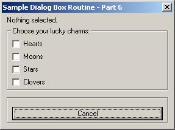
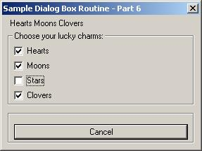

The AutoLisp Tutorial - DCL
Dialog Control Language - Part 6
Part 6 - Text and Toggles
Let's build a working DCL file showing us exactly how to handle text and toggles.
We will build a DCL file containing 4 toggles, one text, plus a Cancel button. The selected item will be displayed on the screen in the text control.
Layout thoughts: I will place the text control on the top of the box. Then I'll put the toggles in a column, (stacked on top of each other). Last, I'll put the Cancel button at the bottom of the dialog box. So...I'll need something like this:
: column {
: column {
: text {
// Put code for text here
}
}
: boxed_column {
: toggle {
// Put code for toggle 1 here
}
: toggle {
// Put code for toggle 2 here
}
: toggle {
// Put code for toggle 3 here
}
: toggle {
// Put code for toggle 4 here
}
}
: boxed_row {
: button {
// Put
code for the Cancel button here
}
}
}
Let's copy in the code for the header and all of the controls above from the "Controls" section of this tutorial. I'll show the changes that needed to be made in red. Notice the key names and labels had to be changed.
SAMPLE6 : dialog {
label = "Sample Dialog Box Routine
- Part 6";
: column {
: column {
: text {
key = "text1";
value = "Nothing selected.";
}
}
:
boxed_column {
label = "Choose
your lucky charms:";
: toggle {
key = "tog1";
label = "Hearts";
value = "0";
}
: toggle {
key = "tog2";
label = "Moons";
value = "0";
}
: toggle {
key = "tog3";
label = "Stars";
value = "0";
}
: toggle {
key = "tog4";
label = "Clovers";
value = "0";
}
}
: boxed_row {
: button {
key = "cancel";
label = "Cancel";
is_default = true;
is_cancel = true;
}
}
}
Right click and copy the above. Open NotePad and paste it. Save the file as SAMPLE6.DCL Be sure to change the "Save as Type" drop down box to "All Files" before saving it or it will put a ".txt" extension on the file name. Save this file somewhere in the AutoCAD search path.
Next we will get a copy of the AutoLisp model and revise it. All new code is shown in red.
(defun C:SAMPLE6()
;;;--- Load the dcl file
(setq dcl_id (load_dialog "SAMPLE6.dcl"))
;;;--- Load the dialog definition if it is not already loaded
(if (not (new_dialog "SAMPLE6" dcl_id) )
(exit))
;;;--- If an action event occurs, do this function
(action_tile "accept" "(setq ddiag 2)(saveVars)(done_dialog)")
(action_tile "cancel" "(setq ddiag 1)(done_dialog)")
;;;--- Display the dialog box
(start_dialog)
;;;--- Unload the dialog box
(unload_dialog dcl_id)
;;;--- If the user pressed the Cancel button
(if(= ddiag 1)
(princ "\n Sample6 cancelled!")
)
;;;--- If the user pressed the Okay button
(if(= ddiag 2)
(progn
(princ "\n The user pressed Okay!")
)
)
;;;--- Suppress the last echo for a clean exit
(princ)
)
Remove everything listed in orange above. We do not need an Okay button. Thus we do not need to check to see if the user pressed Okay or Cancel. We also do not need the SaveVars routine in this program. Remove the orange items so your program looks like the one below.
(defun C:SAMPLE6()
;;;--- Load the dcl file
(setq dcl_id (load_dialog "SAMPLE6.dcl"))
;;;--- Load the dialog definition if it is not already loaded
(if (not (new_dialog "SAMPLE6" dcl_id) )
(exit))
;;;--- If an action event occurs, do this function
(action_tile "cancel" "(done_dialog)")
;;;--- Display the dialog box
(start_dialog)
;;;--- Unload the dialog box
(unload_dialog dcl_id)
;;;--- Suppress the last echo for a clean exit
(princ)
)
Right click and copy the above. Open NotePad and paste it. Save the file as SAMPLE6.LSP Be sure to change the "Save as Type" drop down box to "All Files" before saving it or it will put a ".txt" extension on the file name. Save this file somewhere in the AutoCAD search path.
Let's load the program and see what the DCL file looks like. On the command line type this:
Command: (load "sample6") and press enter
You should see this
C:Sample6
Command:
Now type Sample6 and press enter. If everything went according to plan you should see this on your screen:

Doesn't look right. The dialog box is too wide. It's our label "Sample Dialog Box Routine - Part 6" that is causing the problem. I would shorten it but, my text control will need the room if everything is selected. I'll have to display "Hearts Moons Stars Clovers" all on one line. I'll leave it the way it is.
Notice you can select and deselect items without a problem but the text control doesn't change. We need to add the action_tiles and function to accomplish this.
First let's write a routine to check each toggle and build a string representing all of the selected items.
(defun chkToggle()
(setq tog1(atoi(get_tile "tog1"))) //
0 = not chosen 1 = chosen
(setq tog2(atoi(get_tile
"tog2"))) // 0 = not chosen
1 = chosen
(setq tog3(atoi(get_tile
"tog3"))) // 0 = not chosen
1 = chosen
(setq tog4(atoi(get_tile
"tog4"))) // 0 = not chosen
1 = chosen
(setq myStr
"")
(if(= tog1 1)(setq myStr(strcat myStr " Hearts")))
(if(= tog2 1)(setq myStr(strcat myStr " Moons")))
(if(= tog3 1)(setq myStr(strcat myStr " Stars")))
(if(= tog4 1)(setq myStr(strcat myStr " Clovers")))
;;;--- If nothing was selected...
(if(= myStr "")(setq myStr
"Nothing Selected!"))
;;;--- Now set the text control to display the string
(set_tile "text1" myStr)
)
Alrighty then. I used the get_tile function to get the value of each toggle. I used the atoi function to convert that data from a string to an integer. (I could have left it a string and checked to see if tog1 equalled "1" instead of the number 1.) I set the variable myStr to an empty string and then appended all the checked toggle labels to it. I then changed the value of the text control by using the set_tile function.
Add this to the top of your autolisp program and save it.
The last step is to add the action calls to the AutoLisp program. We need one action call per toggle switch. Each action call should run the chkToggle function we just created.
(action_tile "tog1"
"(chkToggle)")
(action_tile "tog2" "(chkToggle)")
(action_tile "tog3" "(chkToggle)")
(action_tile "tog4" "(chkToggle)")
Let's add this to the AutoLisp program. I'll show the new chkToggle function and the action calls in red. It should look like this:
(defun chkToggle()
(setq tog1(atoi(get_tile
"tog1"))) // 0 = not chosen 1 = chosen
(setq tog2(atoi(get_tile "tog2"))) // 0 = not chosen
1 = chosen
(setq tog3(atoi(get_tile "tog3"))) // 0 = not chosen
1 = chosen
(setq tog4(atoi(get_tile "tog4"))) // 0 = not chosen
1 = chosen
(setq myStr "")
(if(= tog1 1)(setq myStr(strcat myStr " Hearts")))
(if(= tog2 1)(setq myStr(strcat myStr " Moons")))
(if(= tog3 1)(setq myStr(strcat myStr " Stars")))
(if(= tog4 1)(setq myStr(strcat myStr " Clovers")))
;;;--- If nothing was
selected...
(if(= myStr "")(setq myStr "Nothing Selected!"))
;;;--- Now set the text control to display the string
(set_tile "text1" myStr)
)
(defun C:SAMPLE6()
;;;--- Load the dcl file
(setq dcl_id (load_dialog "SAMPLE6.dcl"))
;;;--- Load the dialog definition if it is not already loaded
(if (not (new_dialog "SAMPLE6" dcl_id) ) (exit))
;;;--- If an action event occurs, do this function
(action_tile
"tog1" "(chkToggle)")
(action_tile "tog2" "(chkToggle)")
(action_tile "tog3" "(chkToggle)")
(action_tile "tog4" "(chkToggle)")
(action_tile "cancel" "(done_dialog)")
;;;--- Display the dialog box
(start_dialog)
;;;--- Unload the dialog box
(unload_dialog dcl_id)
;;;--- Suppress the last echo for a clean exit
(princ)
)
Save it and test it out. Everything working okay?

When you get your program tested and everything is working, move the blue line above, [ (defun C:SAMPLE6() ] all the way to the top of the file. This will make all of your variables local and will reset them all to nil when the program ends.
That's it. We're done.